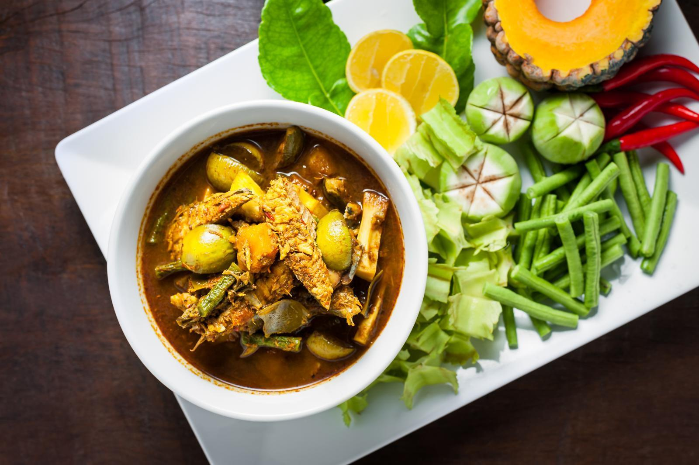
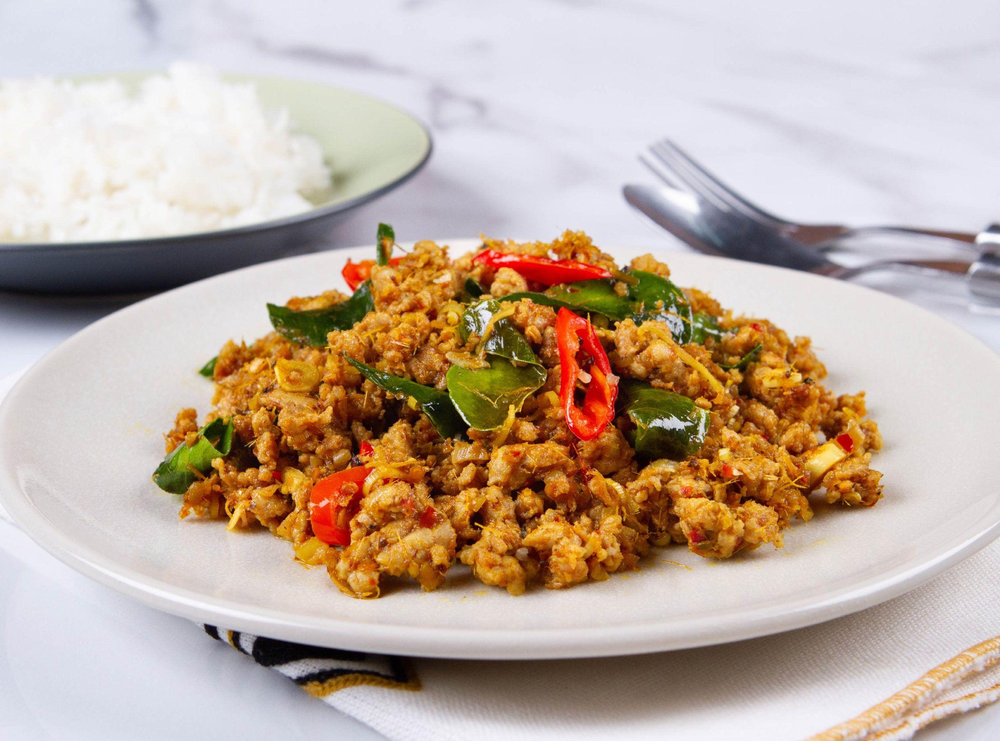
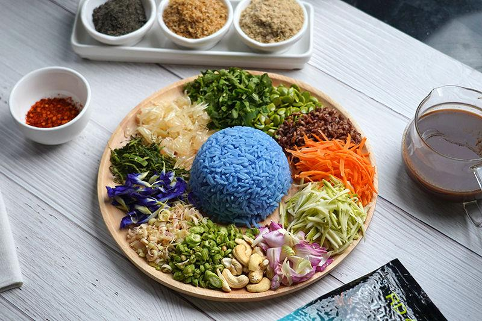
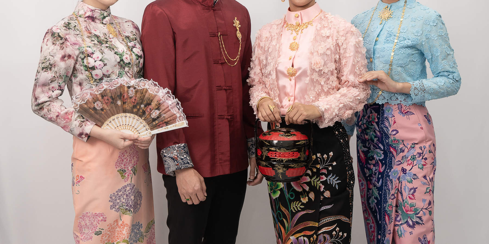
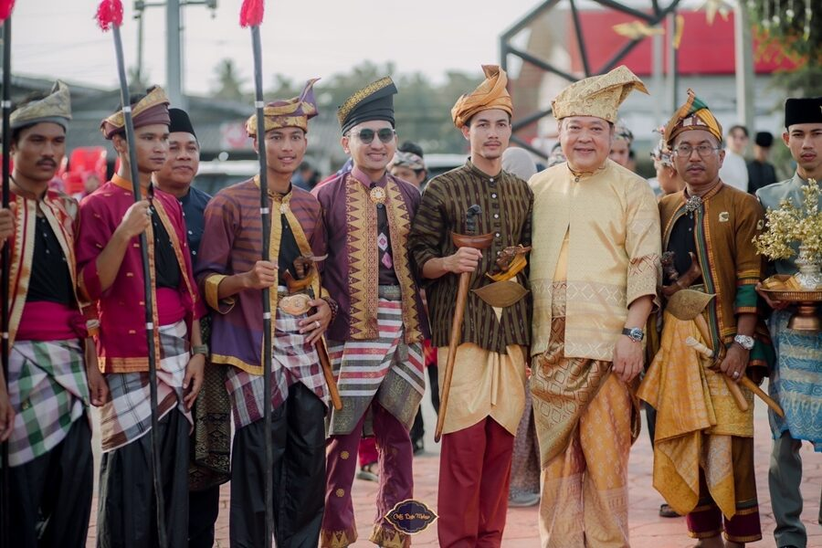
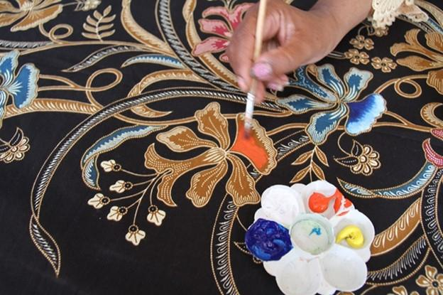
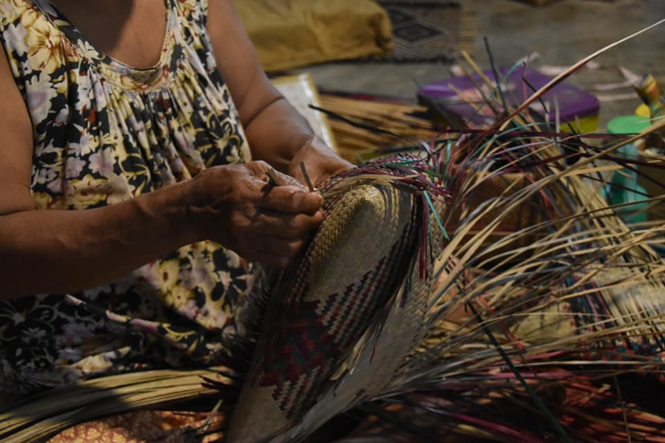

ประเพณีโยนข้าวหลาม
ประเพณีท้องถิ่นที่ชาวบ้านนำข้าวหลามมาร่วมกิจกรรมโยนข้าวหลามตามความเชื่อและวิถีชีวิตของชุมชน เพื่อสืบสานวัฒนธรรมพื้นบ้าน
วิถีชีวิตหลากหลายริมทะเล
ดินแดนแห่งทะเล ภูเขา และวัฒนธรรมที่หลากหลาย
ทั้งพุทธ มุสลิม และชาวพื้นถิ่น
เสน่ห์รสชาติความเป็นปักษ์ใต้

แกงพื้นเมืองภาคใต้ที่ใช้ไตปลาหมักเป็นส่วนประกอบสำคัญ มีรสเผ็ดจัดและเค็มเข้มข้น นิยมกินกับข้าวสวยและผักสด

อาหารประเภทผัดแห้งที่ใช้เนื้อหมูหรือเนื้อวัวคลุกเคล้ากับเครื่องแกงใต้ มีรสเผ็ดจัดและกลิ่นหอมสมุนไพร

อาหารพื้นเมืองที่นำข้าวมาคลุกกับผักและสมุนไพรหลากหลายชนิด ราดด้วยน้ำบูดู มีรสชาติกลมกล่อมและกลิ่นหอมเฉพาะตัว

ผ้าและวิถีชีวิตเครื่องแต่งกายพื้นเมืองที่ผสมผสานวัฒนธรรมจีนและมลายู โดดเด่นด้วยเสื้อลูกไม้ปักลวดลายสวยงาม สวมคู่กับผ้าปาเต๊ะ

เรื่องราวบนผืนผ้าการแต่งกายที่สะท้อนวัฒนธรรมชาวไทยเชื้อสายมลายู ผู้หญิงนิยมสวมชุดบาจูกุรุง ส่วนผู้ชายสวมชุดบาจูมลายูในงานสำคัญ

งานฝีมือจากชุมชนภูมิปัญญาการสร้างลวดลายบนผืนผ้าด้วยเทคนิคเขียนเทียนและย้อมสี มีลวดลายที่ได้รับแรงบันดาลใจจากธรรมชาติและทะเล

การใช้ทรัพยากรธรรมชาติอย่างคุ้มค่าหัตถกรรมพื้นบ้านที่นำต้นกระจูดมาตากแห้งและจักสานเป็นเสื่อ กระเป๋า และเครื่องใช้ต่าง ๆ สะท้อนการใช้ทรัพยากรธรรมชาติอย่างคุ้มค่า